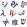

C++
|
| |
| Paradigm | Multi-paradigm: procedural, functional, object-oriented, generic[1] |
|---|---|
| Designed by | Bjarne Stroustrup |
| First appeared | 1985 |
| Stable release |
ISO/IEC 14882:2017
/ 1 December 2017 |
| Typing discipline | Static, nominative, partially inferred |
| Implementation language | C++ or C |
| Filename extensions | .C, .cc, .cpp, .cxx, .c++, .h, .hh, .hpp, .hxx, .h++ |
| Website |
isocpp |
| Major implementations | |
| LLVM Clang, GCC, Microsoft Visual C++, Embarcadero C++Builder, Intel C++ Compiler, IBM XL C++, EDG | |
| Influenced by | |
| Ada, ALGOL 68, C, CLU, ML, Simula | |
| Influenced | |
| Ada 95, C#,[2] C99, Chapel,[3] D, Java,[4] Lua, Perl, PHP, Python,[5] Rust, Nim[citation needed] | |
| |
{kind=link}
C++ (/ˌsiːˌplʌsˈplʌs/ "see plus plus") is a general-purpose programming language. It has imperative, object-oriented and generic programming features, while also providing facilities for low-level memory manipulation.
It was designed with a bias toward system programming and embedded, resource-constrained and large systems, with performance, efficiency and flexibility of use as its design highlights.[6] C++ has also been found useful in many other contexts, with key strengths being software infrastructure and resource-constrained applications,[6] including desktop applications, servers (e.g. e-commerce, Web search or SQL servers), and performance-critical applications (e.g. telephone switches or space probes).[7] C++ is a compiled language, with implementations of it available on many platforms. Many vendors provide C++ compilers, including the Free Software Foundation, Microsoft, Intel, and IBM.
C++ is standardized by the International Organization for Standardization (ISO), with the latest standard version ratified and published by ISO in December 2017 as ISO/IEC 14882:2017 (informally known as C++17).[8] The C++ programming language was initially standardized in 1998 as ISO/IEC 14882:1998, which was then amended by the C++03, C++11 and C++14 standards. The current C++17 standard supersedes these with new features and an enlarged standard library. Before the initial standardization in 1998, C++ was developed by Bjarne Stroustrup at Bell Labs since 1979, as an extension of the C language as he wanted an efficient and flexible language similar to C, which also provided high-level features for program organization.[9] C++20 is the next planned standard thereafter.
Many other programming languages have been influenced by C++, including C#, D, Java, and newer versions of C.
Contents
History[edit]

In 1979, Bjarne Stroustrup, a Danish computer scientist, began work on "C with Classes", the predecessor to C++.[10] The motivation for creating a new language originated from Stroustrup's experience in programming for his Ph.D. thesis. Stroustrup found that Simula had features that were very helpful for large software development, but the language was too slow for practical use, while BCPL was fast but too low-level to be suitable for large software development. When Stroustrup started working in AT&T Bell Labs, he had the problem of analyzing the UNIX kernel with respect to distributed computing. Remembering his Ph.D. experience, Stroustrup set out to enhance the C language with Simula-like features.[11] C was chosen because it was general-purpose, fast, portable and widely used. As well as C and Simula's influences, other languages also influenced C++, including ALGOL 68, Ada, CLU and ML.
Initially, Stroustrup's "C with Classes" added features to the C compiler, Cpre, including classes, derived classes, strong typing, inlining and default arguments.[12]
In 1983, "C with Classes" was renamed to "C++" (++ being the increment operator in C), adding new features that included virtual functions, function name and operator overloading, references, constants, type-safe free-store memory allocation (new/delete), improved type checking, and BCPL style single-line comments with two forward slashes (//). Furthermore, it included the development of a standalone compiler for C++, Cfront.
In 1985, the first edition of The C++ Programming Language was released, which became the definitive reference for the language, as there was not yet an official standard.[13] The first commercial implementation of C++ was released in October of the same year.[10]
In 1989, C++ 2.0 was released, followed by the updated second edition of The C++ Programming Language in 1991.[14] New features in 2.0 included multiple inheritance, abstract classes, static member functions, const member functions, and protected members. In 1990, The Annotated C++ Reference Manual was published. This work became the basis for the future standard. Later feature additions included templates, exceptions, namespaces, new casts, and a boolean type.
After the 2.0 update, C++ evolved relatively slowly until, in 2011, the C++11 standard was released, adding numerous new features, enlarging the standard library further, and providing more facilities to C++ programmers. After a minor C++14 update released in December 2014, various new additions were introduced in C++17, and further changes planned for 2020.[15]
As of 2017, C++ remains the third most popular programming language, behind Java and C.[16][17]
On January 3, 2018, Stroustrup was announced as the 2018 winner of the Charles Stark Draper Prize for Engineering, "for conceptualizing and developing the C++ programming language."[18]
Etymology[edit]
According to Stroustrup: "the name signifies the evolutionary nature of the changes from C".[19] This name is credited to Rick Mascitti (mid-1983)[12] and was first used in December 1983. When Mascitti was questioned informally in 1992 about the naming, he indicated that it was given in a tongue-in-cheek spirit. The name comes from C's ++ operator (which increments the value of a variable) and a common naming convention of using "+" to indicate an enhanced computer program.
During C++'s development period, the language had been referred to as "new C" and "C with Classes"[12][20] before acquiring its final name.
Philosophy[edit]
Throughout C++'s life, its development and evolution has been guided by a set of principles:[11]
- It must be driven by actual problems and its features should be useful immediately in real world programs.
- Every feature should be implementable (with a reasonably obvious way to do so).
- Programmers should be free to pick their own programming style, and that style should be fully supported by C++.
- Allowing a useful feature is more important than preventing every possible misuse of C++.
- It should provide facilities for organising programs into well-defined separate parts, and provide facilities for combining separately developed parts.
- No implicit violations of the type system (but allow explicit violations; that is, those explicitly requested by the programmer).
- User-created types need to have the same support and performance as built-in types.
- Unused features should not negatively impact created executables (e.g. in lower performance).
- There should be no language beneath C++ (except assembly language).
- C++ should work alongside other existing programming languages, rather than fostering its own separate and incompatible programming environment.
- If the programmer's intent is unknown, allow the programmer to specify it by providing manual control.
Standardization[edit]
| Year | C++ Standard | Informal name |
|---|---|---|
| 1998 | ISO/IEC 14882:1998[21] | C++98 |
| 2003 | ISO/IEC 14882:2003[22] | C++03 |
| 2011 | ISO/IEC 14882:2011[23] | C++11, C++0x |
| 2014 | ISO/IEC 14882:2014[24] | C++14, C++1y |
| 2017 | ISO/IEC 14882:2017[8] | C++17, C++1z |
| 2020 | to be determined | C++20[15] |
C++ is standardized by an ISO working group known as JTC1/SC22/WG21. So far, it has published five revisions of the C++ standard and is currently working on the next revision, C++20.
In 1998, the ISO working group standardized C++ for the first time as ISO/IEC 14882:1998, which is informally known as C++98. In 2003, it published a new version of the C++ standard called ISO/IEC 14882:2003, which fixed problems identified in C++98.
The next major revision of the standard was informally referred to as "C++0x", but it was not released until 2011.[25] C++11 (14882:2011) included many additions to both the core language and the standard library.[23]
In 2014, C++14 (also known as C++1y) was released as a small extension to C++11, featuring mainly bug fixes and small improvements.[26] The Draft International Standard ballot procedures completed in mid-August 2014.[27]
After C++14, a major revision C++17, informally known as C++1z, was completed by the ISO C++ Committee in mid July 2017 and was approved and published in December 2017.[28]
As part of the standardization process, ISO also publishes technical reports and specifications:
- ISO/IEC TR 18015:2006[29] on the use of C++ in embedded systems and on performance implications of C++ language and library features,
- ISO/IEC TR 19768:2007[30] (also known as the C++ Technical Report 1) on library extensions mostly integrated into C++11,
- ISO/IEC TR 29124:2010[31] on special mathematical functions,
- ISO/IEC TR 24733:2011[32] on decimal floating point arithmetic,
- ISO/IEC TS 18822:2015[33] on the standard filesystem library,
- ISO/IEC TS 19570:2015[34] on parallel versions of the standard library algorithms,
- ISO/IEC TS 19841:2015[35] on software transactional memory,
- ISO/IEC TS 19568:2015[36] on a new set of library extensions, some of which are already integrated into C++17,
- ISO/IEC TS 19217:2015[37] on the C++ Concepts
More technical specifications are in development and pending approval, including concurrency library extensions, a networking standard library, ranges, and modules.[38]
Language[edit]
The C++ language has two main components: a direct mapping of hardware features provided primarily by the C subset, and zero-overhead abstractions based on those mappings. Stroustrup describes C++ as "a light-weight abstraction programming language [designed] for building and using efficient and elegant abstractions";[6] and "offering both hardware access and abstraction is the basis of C++. Doing it efficiently is what distinguishes it from other languages".[39]
C++ inherits most of C's syntax. The following is Bjarne Stroustrup's version of the Hello world program that uses the C++ Standard Library stream facility to write a message to standard output:[40][41]
1 #include <iostream>
2
3 int main()
4 {
5 std::cout << "Hello, world!\n";
6 }
Object storage[edit]
As in C, C++ supports four types of memory management: static storage duration objects, thread storage duration objects, automatic storage duration objects, and dynamic storage duration objects.[42]
Static storage duration objects[edit]
Static storage duration objects are created before main() is entered (see exceptions below) and destroyed in reverse order of creation after main() exits. The exact order of creation is not specified by the standard (though there are some rules defined below) to allow implementations some freedom in how to organize their implementation. More formally, objects of this type have a lifespan that "shall last for the duration of the program".[43]
Static storage duration objects are initialized in two phases. First, "static initialization" is performed, and only after all static initialization is performed, "dynamic initialization" is performed. In static initialization, all objects are first initialized with zeros; after that, all objects that have a constant initialization phase are initialized with the constant expression (i.e. variables initialized with a literal or constexpr). Though it is not specified in the standard, the static initialization phase can be completed at compile time and saved in the data partition of the executable. Dynamic initialization involves all object initialization done via a constructor or function call (unless the function is marked with constexpr, in C++11). The dynamic initialization order is defined as the order of declaration within the compilation unit (i.e. the same file). No guarantees are provided about the order of initialization between compilation units.
Thread storage duration objects[edit]
Variables of this type are very similar to static storage duration objects. The main difference is the creation time is just prior to thread creation and destruction is done after the thread has been joined.[44]
Automatic storage duration objects[edit]
The most common variable types in C++ are local variables inside a function or block, and temporary variables.[45] The common feature about automatic variables is that they have a lifetime that is limited to the scope of the variable. They are created and potentially initialized at the point of declaration (see below for details) and destroyed in the reverse order of creation when the scope is left. This is implemented by allocation on the stack.
Local variables are created as the point of execution passes the declaration point. If the variable has a constructor or initializer this is used to define the initial state of the object. Local variables are destroyed when the local block or function that they are declared in is closed. C++ destructors for local variables are called at the end of the object lifetime, allowing a discipline for automatic resource management termed RAII, which is widely used in C++.
Member variables are created when the parent object is created. Array members are initialized from 0 to the last member of the array in order. Member variables are destroyed when the parent object is destroyed in the reverse order of creation. i.e. If the parent is an "automatic object" then it will be destroyed when it goes out of scope which triggers the destruction of all its members.
Temporary variables are created as the result of expression evaluation and are destroyed when the statement containing the expression has been fully evaluated (usually at the ; at the end of a statement).
Dynamic storage duration objects[edit]
These objects have a dynamic lifespan and are created with a call to new and destroyed explicitly with a call to delete.[46]
Templates[edit]
C++ templates enable generic programming. C++ supports function, class, alias and variable templates. Templates may be parameterized by types, compile-time constants, and other templates. Templates are implemented by instantiation at compile-time. To instantiate a template, compilers substitute specific arguments for a template's parameters to generate a concrete function or class instance. Some substitutions are not possible; these are eliminated by an overload resolution policy described by the phrase "Substitution failure is not an error" (SFINAE). Templates are a powerful tool that can be used for generic programming, template metaprogramming, and code optimization, but this power implies a cost. Template use may increase code size, because each template instantiation produces a copy of the template code: one for each set of template arguments, however, this is the same or smaller amount of code that would be generated if the code was written by hand.[47] This is in contrast to run-time generics seen in other languages (e.g., Java) where at compile-time the type is erased and a single template body is preserved.
Templates are different from macros: while both of these compile-time language features enable conditional compilation, templates are not restricted to lexical substitution. Templates are aware of the semantics and type system of their companion language, as well as all compile-time type definitions, and can perform high-level operations including programmatic flow control based on evaluation of strictly type-checked parameters. Macros are capable of conditional control over compilation based on predetermined criteria, but cannot instantiate new types, recurse, or perform type evaluation and in effect are limited to pre-compilation text-substitution and text-inclusion/exclusion. In other words, macros can control compilation flow based on pre-defined symbols but cannot, unlike templates, independently instantiate new symbols. Templates are a tool for static polymorphism (see below) and generic programming.
In addition, templates are a compile time mechanism in C++ that is Turing-complete, meaning that any computation expressible by a computer program can be computed, in some form, by a template metaprogram prior to runtime.
In summary, a template is a compile-time parameterized function or class written without knowledge of the specific arguments used to instantiate it. After instantiation, the resulting code is equivalent to code written specifically for the passed arguments. In this manner, templates provide a way to decouple generic, broadly applicable aspects of functions and classes (encoded in templates) from specific aspects (encoded in template parameters) without sacrificing performance due to abstraction.
Objects[edit]
C++ introduces object-oriented programming (OOP) features to C. It offers classes, which provide the four features commonly present in OOP (and some non-OOP) languages: abstraction, encapsulation, inheritance, and polymorphism. One distinguishing feature of C++ classes compared to classes in other programming languages is support for deterministic destructors, which in turn provide support for the Resource Acquisition is Initialization (RAII) concept.
Encapsulation[edit]
Encapsulation is the hiding of information to ensure that data structures and operators are used as intended and to make the usage model more obvious to the developer. C++ provides the ability to define classes and functions as its primary encapsulation mechanisms. Within a class, members can be declared as either public, protected, or private to explicitly enforce encapsulation. A public member of the class is accessible to any function. A private member is accessible only to functions that are members of that class and to functions and classes explicitly granted access permission by the class ("friends"). A protected member is accessible to members of classes that inherit from the class in addition to the class itself and any friends.
The OO principle is that all of the functions (and only the functions) that access the internal representation of a type should be encapsulated within the type definition. C++ supports this (via member functions and friend functions), but does not enforce it: the programmer can declare parts or all of the representation of a type to be public, and is allowed to make public entities that are not part of the representation of the type. Therefore, C++ supports not just OO programming, but other decomposition paradigms, like modular programming.
It is generally considered good practice to make all data private or protected, and to make public only those functions that are part of a minimal interface for users of the class. This can hide the details of data implementation, allowing the designer to later fundamentally change the implementation without changing the interface in any way.[48][49]
Inheritance[edit]
Inheritance allows one data type to acquire properties of other data types. Inheritance from a base class may be declared as public, protected, or private. This access specifier determines whether unrelated and derived classes can access the inherited public and protected members of the base class. Only public inheritance corresponds to what is usually meant by "inheritance". The other two forms are much less frequently used. If the access specifier is omitted, a "class" inherits privately, while a "struct" inherits publicly. Base classes may be declared as virtual; this is called virtual inheritance. Virtual inheritance ensures that only one instance of a base class exists in the inheritance graph, avoiding some of the ambiguity problems of multiple inheritance.
Multiple inheritance is a C++ feature not found in most other languages, allowing a class to be derived from more than one base class; this allows for more elaborate inheritance relationships. For example, a "Flying Cat" class can inherit from both "Cat" and "Flying Mammal". Some other languages, such as C# or Java, accomplish something similar (although more limited) by allowing inheritance of multiple interfaces while restricting the number of base classes to one (interfaces, unlike classes, provide only declarations of member functions, no implementation or member data). An interface as in C# and Java can be defined in C++ as a class containing only pure virtual functions, often known as an abstract base class or "ABC". The member functions of such an abstract base class are normally explicitly defined in the derived class, not inherited implicitly. C++ virtual inheritance exhibits an ambiguity resolution feature called dominance.
Operators and operator overloading[edit]
| Operator | Symbol |
|---|---|
| Scope resolution operator | ::
|
| Conditional operator | ?:
|
| dot operator | .
|
| Member selection operator | .*
|
| "sizeof" operator | sizeof
|
| "typeid" operator | typeid
|
C++ provides more than 35 operators, covering basic arithmetic, bit manipulation, indirection, comparisons, logical operations and others. Almost all operators can be overloaded for user-defined types, with a few notable exceptions such as member access (. and .*) as well as the conditional operator. The rich set of overloadable operators is central to making user-defined types in C++ seem like built-in types.
Overloadable operators are also an essential part of many advanced C++ programming techniques, such as smart pointers. Overloading an operator does not change the precedence of calculations involving the operator, nor does it change the number of operands that the operator uses (any operand may however be ignored by the operator, though it will be evaluated prior to execution). Overloaded "&&" and "||" operators lose their short-circuit evaluation property.
Polymorphism[edit]
Polymorphism enables one common interface for many implementations, and for objects to act differently under different circumstances.
C++ supports several kinds of static (resolved at compile-time) and dynamic (resolved at run-time) polymorphisms, supported by the language features described above. Compile-time polymorphism does not allow for certain run-time decisions, while runtime polymorphism typically incurs a performance penalty.
Static polymorphism[edit]
Function overloading allows programs to declare multiple functions having the same name but with different arguments (i.e. ad hoc polymorphism). The functions are distinguished by the number or types of their formal parameters. Thus, the same function name can refer to different functions depending on the context in which it is used. The type returned by the function is not used to distinguish overloaded functions and would result in a compile-time error message.
When declaring a function, a programmer can specify for one or more parameters a default value. Doing so allows the parameters with defaults to optionally be omitted when the function is called, in which case the default arguments will be used. When a function is called with fewer arguments than there are declared parameters, explicit arguments are matched to parameters in left-to-right order, with any unmatched parameters at the end of the parameter list being assigned their default arguments. In many cases, specifying default arguments in a single function declaration is preferable to providing overloaded function definitions with different numbers of parameters.
Templates in C++ provide a sophisticated mechanism for writing generic, polymorphic code (i.e. parametric polymorphism). In particular, through the curiously recurring template pattern, it's possible to implement a form of static polymorphism that closely mimics the syntax for overriding virtual functions. Because C++ templates are type-aware and Turing-complete, they can also be used to let the compiler resolve recursive conditionals and generate substantial programs through template metaprogramming. Contrary to some opinion, template code will not generate a bulk code after compilation with the proper compiler settings.[47]
Dynamic polymorphism[edit]
Inheritance[edit]
Variable pointers and references to a base class type in C++ can also refer to objects of any derived classes of that type. This allows arrays and other kinds of containers to hold pointers to objects of differing types (references cannot be directly held in containers). This enables dynamic (run-time) polymorphism, where the referred objects can behave differently depending on their (actual, derived) types.
C++ also provides the dynamic_cast operator, which allows code to safely attempt conversion of an object, via a base reference/pointer, to a more derived type: downcasting. The attempt is necessary as often one does not know which derived type is referenced. (Upcasting, conversion to a more general type, can always be checked/performed at compile-time via static_cast, as ancestral classes are specified in the derived class's interface, visible to all callers.) dynamic_cast relies on run-time type information (RTTI), metadata in the program that enables differentiating types and their relationships. If a dynamic_cast to a pointer fails, the result is the nullptr constant, whereas if the destination is a reference (which cannot be null), the cast throws an exception. Objects known to be of a certain derived type can be cast to that with static_cast, bypassing RTTI and the safe runtime type-checking of dynamic_cast, so this should be used only if the programmer is very confident the cast is, and will always be, valid.
Virtual member functions[edit]
Ordinarily, when a function in a derived class overrides a function in a base class, the function to call is determined by the type of the object. A given function is overridden when there exists no difference in the number or type of parameters between two or more definitions of that function. Hence, at compile time, it may not be possible to determine the type of the object and therefore the correct function to call, given only a base class pointer; the decision is therefore put off until runtime. This is called dynamic dispatch. Virtual member functions or methods[50] allow the most specific implementation of the function to be called, according to the actual run-time type of the object. In C++ implementations, this is commonly done using virtual function tables. If the object type is known, this may be bypassed by prepending a fully qualified class name before the function call, but in general calls to virtual functions are resolved at run time.
In addition to standard member functions, operator overloads and destructors can be virtual. As a rule of thumb, if any function in the class is virtual, the destructor should be as well. As the type of an object at its creation is known at compile time, constructors, and by extension copy constructors, cannot be virtual. Nonetheless a situation may arise where a copy of an object needs to be created when a pointer to a derived object is passed as a pointer to a base object. In such a case, a common solution is to create a clone() (or similar) virtual function that creates and returns a copy of the derived class when called.
A member function can also be made "pure virtual" by appending it with = 0 after the closing parenthesis and before the semicolon. A class containing a pure virtual function is called an abstract class. Objects cannot be created from an abstract class; they can only be derived from. Any derived class inherits the virtual function as pure and must provide a non-pure definition of it (and all other pure virtual functions) before objects of the derived class can be created. A program that attempts to create an object of a class with a pure virtual member function or inherited pure virtual member function is ill-formed.
Lambda expressions[edit]
C++ provides support for anonymous functions, also known as lambda expressions, with the following form:
[capture](parameters) -> return_type { function_body }
The [capture] list supports the definition of closures. Such lambda expressions are defined in the standard as syntactic sugar for an unnamed function object. An example lambda function may be defined as follows:
[](int x, int y) -> int { return x + y; }
Exception handling[edit]
Exception handling is used to communicate the existence of a runtime problem or error from where it was detected to where the issue can be handled.[51] It permits this to be done in a uniform manner and separately from the main code, while detecting all errors.[52] Should an error occur, an exception is thrown (raised), which is then caught by the nearest suitable exception handler. The exception causes the current scope to be exited, and also each outer scope (propagation) until a suitable handler is found, calling in turn the destructors of any objects in these exited scopes.[53] At the same time, an exception is presented as an object carrying the data about the detected problem.[54]
Note that many C++ "styles", like Google's[55], forbid usage of exceptions in C++ programs, restricting the language thusly.
The exception-causing code is placed inside a try block. The exceptions are handled in separate catch blocks (the handlers); each try block can have multiple exception handlers, as it is visible in the example below.[56]
1 #include <iostream>
2 #include <vector>
3 #include <stdexcept>
4
5 int main() {
6 try {
7 std::vector<int> vec{3, 4, 3, 1};
8 int i{vec.at(4)}; // Throws an exception, std::out_of_range (indexing for vec is from 0-3 not 1-4)
9 }
10 // An exception handler, catches std::out_of_range, which is thrown by vec.at(4)
11 catch (std::out_of_range &e) {
12 std::cerr << "Accessing a non-existent element: " << e.what() << '\n';
13 }
14 // To catch any other standard library exceptions (they derive from std::exception)
15 catch (std::exception &e) {
16 std::cerr << "Exception thrown: " << e.what() << '\n';
17 }
18 // Catch any unrecognised exceptions (i.e. those which don't derive from std::exception)
19 catch (...) {
20 std::cerr << "Some fatal error\n";
21 }
22 }
It is also possible to raise exceptions purposefully, using the throw keyword; these exceptions are handled in the usual way. In some cases, exceptions cannot be used due to technical reasons. One such example is a critical component of an embedded system, where every operation must be guaranteed to complete within a specified amount of time. This cannot be determined with exceptions as no tools exist to determine the maximum time required for an exception to be handled.[57]
Standard library[edit]
The C++ standard consists of two parts: the core language and the standard library. C++ programmers expect the latter on every major implementation of C++; it includes aggregate types (vectors, lists, maps, sets, queues, stacks, arrays, tuples), algorithms (find, for_each, binary_search, random_shuffle, etc.), input/output facilities (iostream, for reading from and writing to the console and files), filesystem library, localisation support, smart pointers for automatic memory management, regular expression support, multi-threading library, atomics support (allowing a variable to be read or written to by at most one thread at a time without any external synchronisation), time utilities (measurement, getting current time, etc.), a system for converting error reporting that doesn't use C++ exceptions into C++ exceptions, a random number generator and a slightly modified version of the C standard library (to make it comply with the C++ type system).
A large part of the C++ library is based on the Standard Template Library (STL). Useful tools provided by the STL include containers as the collections of objects (such as vectors and lists), iterators that provide array-like access to containers, and algorithms that perform operations such as searching and sorting.
Furthermore, (multi)maps (associative arrays) and (multi)sets are provided, all of which export compatible interfaces. Therefore, using templates it is possible to write generic algorithms that work with any container or on any sequence defined by iterators. As in C, the features of the library are accessed by using the #include directive to include a standard header. The C++ Standard Library provides 105 standard headers, of which 27 are deprecated.
The standard incorporates the STL that was originally designed by Alexander Stepanov, who experimented with generic algorithms and containers for many years. When he started with C++, he finally found a language where it was possible to create generic algorithms (e.g., STL sort) that perform even better than, for example, the C standard library qsort, thanks to C++ features like using inlining and compile-time binding instead of function pointers. The standard does not refer to it as "STL", as it is merely a part of the standard library, but the term is still widely used to distinguish it from the rest of the standard library (input/output streams, internationalization, diagnostics, the C library subset, etc.).[58]
Most C++ compilers, and all major ones, provide a standards-conforming implementation of the C++ standard library.
Compatibility[edit]
To give compiler vendors greater freedom, the C++ standards committee decided not to dictate the implementation of name mangling, exception handling, and other implementation-specific features. The downside of this decision is that object code produced by different compilers is expected to be incompatible. There were, however, attempts to standardize compilers for particular machines or operating systems (for example C++ ABI),[59] though they seem to be largely abandoned now.
With C[edit]
C++ is often considered to be a superset of C, but this is not strictly true.[60] Most C code can easily be made to compile correctly in C++, but there are a few differences that cause some valid C code to be invalid or behave differently in C++. For example, C allows implicit conversion from void* to other pointer types, but C++ does not (for type safety reasons). Also, C++ defines many new keywords, such as new and class, which may be used as identifiers (for example, variable names) in a C program.
Some incompatibilities have been removed by the 1999 revision of the C standard (C99), which now supports C++ features such as line comments (//), and declarations mixed with code. On the other hand, C99 introduced a number of new features that C++ did not support, were incompatible or redundant in C++, such as variable-length arrays, native complex-number types (however, the std::complex class in the C++ standard library provides similar functionality, although not code-compatible), designated initializers, compound literals, and the restrict keyword.[61] Some of the C99-introduced features were included in the subsequent version of the C++ standard, C++11 (out of those which were not redundant).[62][63][64] However, the C++11 standard introduces new incompatibilities, such as disallowing assignment of a string literal to a character pointer, which remains valid C.
To intermix C and C++ code, any function declaration or definition that is to be called from/used both in C and C++ must be declared with C linkage by placing it within an extern "C" {/*...*/} block. Such a function may not rely on features depending on name mangling (i.e., function overloading).
Criticism[edit]
Despite its widespread adoption, some notable programmers have criticized the C++ language, including Linus Torvalds,[65] Richard Stallman,[66] Joshua Bloch, Ken Thompson[67][68][69], and Donald Knuth[70][71].
One of the most often criticised points of C++ is its perceived complexity as a language, with the criticism that a large number of non-orthogonal features in practice necessitates restricting code to subset of C++, thus eschewing the readability benefits of common style and idioms. As expressed by Joshua Bloch:
I think C++ was pushed well beyond its complexity threshold and yet there are a lot of people programming it. But what you do is you force people to subset it. So almost every shop that I know of that uses C++ says, “Yes, we’re using C++ but we’re not doing multiple-implementation inheritance and we’re not using operator overloading.” There are just a bunch of features that you’re not going to use because the complexity of the resulting code is too high. And I don’t think it’s good when you have to start doing that. You lose this programmer portability where everyone can read everyone else’s code, which I think is such a good thing.
Donald Knuth (1993, commenting on pre-standardized C++), who said of Edsger Dijkstra that "to think of programming in C++" "would make him physically ill"[70], [71]:
The problem that I have with them today is that... C++ is too complicated. At the moment, it's impossible for me to write portable code that I believe would work on lots of different systems, unless I avoid all exotic features. Whenever the C++ language designers had two competing ideas as to how they should solve some problem, they said "OK, we'll do them both". So the language is too baroque for my taste.
Ken Thompson, whose colleague Stroustrup was at Bell Labs, gives his assessment [68][69]:
It certainly has its good points. But by and large I think it’s a bad language. It does a lot of things half well and it’s just a garbage heap of ideas that are mutually exclusive. Everybody I know, whether it’s personal or corporate, selects a subset and these subsets are different. So it’s not a good language to transport an algorithm—to say, “I wrote it; here, take it.” It’s way too big, way too complex. And it’s obviously built by a committee. Stroustrup campaigned for years and years and years, way beyond any sort of technical contributions he made to the language, to get it adopted and used. And he sort of ran all the standards committees with a whip and a chair. And he said “no” to no one. He put every feature in that language that ever existed. It wasn’t cleanly designed—it was just the union of everything that came along. And I think it suffered drastically from that.
However Brian Kernighan, also a colleague at Bell Labs, disputes this assessment[72]:
C++ has been enormously influential. ... Lots of people say C++ is too big and too complicated etc. etc. but in fact it is a very powerful language and pretty much everything that is in there is there for a really sound reason: it is not somebody doing random invention, it is actually people trying to solve real world problems. Now a lot of the programs that we take for granted today, that we just use, are C++ programs.
Stroustrup himself comments that: "within C++, there is a much smaller and cleaner language struggling to get out"[73]
Other complaints may include a lack of reflection or garbage collection, slow compilation times, perceived feature creep,[74] and verbose error messages, particularly from template metaprogramming.[75]
See also[edit]
References[edit]
- Jump up ^ Stroustrup, Bjarne (1997). "1". The C++ Programming Language (Third ed.). ISBN 0-201-88954-4. OCLC 59193992.
- Jump up ^ Naugler, David (May 2007). "C# 2.0 for C++ and Java programmer: conference workshop". Journal of Computing Sciences in Colleges. 22 (5).
Although C# has been strongly influenced by Java it has also been strongly influenced by C++ and is best viewed as a descendant of both C++ and Java.
- Jump up ^ "Chapel spec (Acknowledgements)" (PDF). Cray Inc. 1 October 2015. Retrieved 14 January 2016.
- Jump up ^ Harry. H. Chaudhary (28 July 2014). "Cracking The Java Programming Interview :: 2000+ Java Interview Que/Ans". Retrieved 29 May 2016.
- Jump up ^ "9. Classes — Python 3.6.4 documentation". docs.python.org. Retrieved 2018-01-09.
- ^ Jump up to: a b c Stroustrup, B. (6 May 2014). "Lecture:The essence of C++. University of Edinburgh". Retrieved 12 June 2015.
- Jump up ^ Stroustrup, Bjarne (17 February 2014). "C++ Applications". stroustrup.com. Retrieved 5 May 2014.
- ^ Jump up to: a b "ISO/IEC 14882:2017". International Organization for Standardization.
- Jump up ^ "Bjarne Stroustrup's Homepage". www.stroustrup.com.
- ^ Jump up to: a b Stroustrup, Bjarne (7 March 2010). "Bjarne Stroustrup's FAQ: When was C++ invented?". stroustrup.com. Retrieved 16 September 2010.
- ^ Jump up to: a b Stroustrup, Bjarne. "Evolving a language in and for the real world: C++ 1991-2006" (PDF).
- ^ Jump up to: a b c Stroustrup, Bjarne. "A History of C ++ : 1979− 1991" (PDF).
- Jump up ^ Stroustrup, Bjarne. "The C++ Programming Language" (First ed.). Retrieved 16 September 2010.
- Jump up ^ Stroustrup, Bjarne. "The C++ Programming Language" (Second ed.). Retrieved 16 September 2010.
- ^ Jump up to: a b https://herbsutter.com/2016/06/30/trip-report-summer-iso-c-standards-meeting-oulu/ "the next standard after C++17 will be C++20"
- Jump up ^ "Latest news." TIOBE Index | TIOBE - The Software Quality Company. N.p., n.d. Web. 5 June 2017.
- Jump up ^ Krill, Paul. "Java, C, C face growing competition in popularity." InfoWorld. InfoWorld, 10 February 2017. Web. 5 June 2017.
- Jump up ^ https://www.nae.edu/177355.aspx "Computer Science Pioneer Bjarne Stroustrup to Receive the 2018 Charles Stark Draper Prize for Engineering"
- Jump up ^ "Bjarne Stroustrup's FAQ – Where did the name "C++" come from?". Retrieved 16 January 2008.
- Jump up ^ "C For C++ Programmers". Northeastern University. Retrieved 7 September 2015.
- Jump up ^ "ISO/IEC 14882:1998". International Organization for Standardization.
- Jump up ^ "ISO/IEC 14882:2003". International Organization for Standardization.
- ^ Jump up to: a b "ISO/IEC 14882:2011". International Organization for Standardization.
- Jump up ^ "ISO/IEC 14882:2014". International Organization for Standardization.
- Jump up ^ "We have an international standard: C++0x is unanimously approved". Sutter's Mill.
- Jump up ^ "The Future of C++".
- Jump up ^ "We have C++14! : Standard C++".
- Jump up ^ Trip report: Summer ISO C++ standards meeting (Toronto)
- Jump up ^ "ISO/IEC TR 18015:2006". International Organization for Standardization.
- Jump up ^ "ISO/IEC TR 19768:2007". International Organization for Standardization.
- Jump up ^ "ISO/IEC TR 29124:2010". International Organization for Standardization.
- Jump up ^ "ISO/IEC TR 24733:2011". International Organization for Standardization.
- Jump up ^ "ISO/IEC TS 18822:2015". International Organization for Standardization.
- Jump up ^ "ISO/IEC TS 19570:2015". International Organization for Standardization.
- Jump up ^ "ISO/IEC TS 19841:2015". International Organization for Standardization.
- Jump up ^ "ISO/IEC TS 19568:2015". International Organization for Standardization.
- Jump up ^ "ISO/IEC TS 19217:2015". International Organization for Standardization.
- Jump up ^ See a list at http://en.cppreference.com/w/cpp/experimental Visited 16 January 2016.
- Jump up ^ B. Stroustrup (interviewed by Sergio De Simone) (30 April 2015). "Stroustrup: Thoughts on C++17 - An Interview". Retrieved 8 July 2015.
- Jump up ^ Stroustrup, Bjarne (2000). The C++ Programming Language (Special ed.). Addison-Wesley. p. 46. ISBN 0-201-70073-5.
- Jump up ^ Stroustrup, Bjarne. "Open issues for The C++ Programming Language (3rd Edition)". This code is copied directly from Bjarne Stroustrup's errata page (p. 633). He addresses the use of
'\n'rather thanstd::endl. Also see Can I write "void main()"? for an explanation of the implicitreturn 0;in themainfunction. This implicit return is not available in other functions. - Jump up ^ ISO/IEC. Programming Languages – C++11 Draft (n3797) §3.7 Storage duration [basic.stc]
- Jump up ^ ISO/IEC. Programming Languages – C++11 Draft (n3797) §3.7.1 Static Storage duration [basic.stc.static]
- Jump up ^ ISO/IEC. Programming Languages – C++11 Draft (n3797) §3.7.2 Thread Storage duration [basic.stc.thread]
- Jump up ^ ISO/IEC. Programming Languages – C++11 Draft (n3797) §3.7.3 Automatic Storage duration [basic.stc.auto]
- Jump up ^ ISO/IEC. Programming Languages – C++11 Draft (n3797) §3.7.4 Dynamic Storage duration [basic.stc.dynamic]
- ^ Jump up to: a b "Nobody Understands C++: Part 5: Template Code Bloat". http://blog.emptycrate.com/: EmptyCrate Software. Travel. Stuff. 6 May 2008. Retrieved 8 March 2010.
On occasion you will read or hear someone talking about C++ templates causing code bloat. I was thinking about it the other day and thought to myself, "self, if the code does exactly the same thing then the compiled code cannot really be any bigger, can it?" [...] And what about compiled code size? Each were compiled with the command g++ <filename>.cpp -O3. Non-template version: 8140 bytes, template version: 8028 bytes!
- Jump up ^ Sutter, Herb; Alexandrescu, Andrei (2004). C++ Coding Standards: 101 Rules, Guidelines, and Best Practices. Addison-Wesley.
- Jump up ^ Henricson, Mats; Nyquist, Erik (1997). Industrial Strength C++. Prentice Hall. ISBN 0-13-120965-5.
- Jump up ^ Stroustrup, Bjarne (2000). The C++ Programming Language (Special ed.). Addison-Wesley. p. 310. ISBN 0-201-70073-5.
A virtual member function is sometimes called a method.
- Jump up ^ Mycroft, Alan (2013). "C and C++ Exceptions | Templates" (PDF). Cambridge Computer Laboratory - Course Materials 2013-14. Retrieved 30 August 2016.
- Jump up ^ Stroustrup, Bjarne (2013). The C++ Programming Language. Addison Wesley. p. 345. ISBN 9780321563842.
- Jump up ^ Stroustrup, Bjarne (2013). The C++ Programming Language. Addison Wesley. pp. 363–365. ISBN 9780321563842.
- Jump up ^ Stroustrup, Bjarne (2013). The C++ Programming Language. Addison Wesley. pp. 345, 363. ISBN 9780321563842.
- Jump up ^ https://google.github.io/styleguide/cppguide.html#Exceptions
- Jump up ^ Stroustrup, Bjarne (2013). The C++ Programming Language. Addison Wesley. pp. 344, 370. ISBN 9780321563842.
- Jump up ^ Stroustrup, Bjarne (2013). The C++ Programming Language. Addison Wesley. p. 349. ISBN 9780321563842.
- Jump up ^ Graziano Lo Russo (2008). "An Interview with A. Stepanov". stlport.org. Retrieved 8 October 2015.
- Jump up ^ "C++ ABI Summary". 20 March 2001. Retrieved 30 May 2006.
- Jump up ^ "Bjarne Stroustrup's FAQ – Is C a subset of C++?". Retrieved 5 May 2014.
- Jump up ^ "C9X – The New C Standard". Retrieved 27 December 2008.
- Jump up ^ "C++0x Support in GCC". Retrieved 12 October 2010.
- Jump up ^ "C++0x Core Language Features In VC10: The Table". Retrieved 12 October 2010.
- Jump up ^ "Clang - C++98, C++11, and C++14 Status". Clang.llvm.org. 12 May 2013. Retrieved 10 June 2013.
- Jump up ^ "Re: [RFC] Convert builin-mailinfo.c to use The Better String Library" (Mailing list). 6 September 2007. Retrieved 31 March 2015.
- Jump up ^ "Re: Efforts to attract more users?" (Mailing list). 12 July 2010. Retrieved 31 March 2015.
- Jump up ^ Andrew Binstock (18 May 2011). "Dr. Dobb's: Interview with Ken Thompson". Retrieved 7 February 2014.
- ^ Jump up to: a b Peter Seibel (16 September 2009). Coders at Work: Reflections on the Craft of Programming. Apress. pp. 475–476. ISBN 978-1-4302-1948-4.
- ^ Jump up to: a b https://gigamonkeys.wordpress.com/2009/10/16/coders-c-plus-plus/
- ^ Jump up to: a b http://www.drdobbs.com/architecture-and-design/an-interview-with-donald-knuth/228700500
- ^ Jump up to: a b http://tex.loria.fr/litte/knuth-interview
- Jump up ^ Brian Kernighan (July 18, 2018). Brian Kernighan Q&A - Computerphile.
- Jump up ^ http://www.stroustrup.com/bs_faq.html#really-say-that
- Jump up ^ Pike, Rob (2012). "Less is exponentially more".
- Jump up ^ Kreinin, Yossi (13 October 2009). "Defective C++". Retrieved 3 February 2016.
Further reading[edit]
- Abrahams, David; Gurtovoy, Aleksey. C++ Template Metaprogramming: Concepts, Tools, and Techniques from Boost and Beyond. Addison-Wesley. ISBN 0-321-22725-5.
- Alexandrescu, Andrei (2001). Modern C++ Design: Generic Programming and Design Patterns Applied. Addison-Wesley. ISBN 0-201-70431-5.
- Alexandrescu, Andrei; Sutter, Herb (2004). C++ Design and Coding Standards: Rules and Guidelines for Writing Programs. Addison-Wesley. ISBN 0-321-11358-6.
- Becker, Pete (2006). The C++ Standard Library Extensions : A Tutorial and Reference. Addison-Wesley. ISBN 0-321-41299-0.
- Brokken, Frank (2010). C++ Annotations. University of Groningen. ISBN 90-367-0470-7.
- Coplien, James O. (1994) [reprinted with corrections, original year of publication 1992]. Advanced C++: Programming Styles and Idioms. ISBN 0-201-54855-0.
- Dewhurst, Stephen C. (2005). C++ Common Knowledge: Essential Intermediate Programming. Addison-Wesley. ISBN 0-321-32192-8.
- Information Technology Industry Council (15 October 2003). Programming languages – C++ (Second ed.). Geneva: ISO/IEC. 14882:2003(E).
- Josuttis, Nicolai M. (2012). The C++ Standard Library, A Tutorial and Reference (Second ed.). Addison-Wesley. ISBN 0-321-62321-5.
- Koenig, Andrew; Moo, Barbara E. (2000). Accelerated C++ – Practical Programming by Example. Addison-Wesley. ISBN 0-201-70353-X.
- Lippman, Stanley B.; Lajoie, Josée; Moo, Barbara E. (2011). C++ Primer (Fifth ed.). Addison-Wesley. ISBN 0-321-71411-3.
- Lippman, Stanley B. (1996). Inside the C++ Object Model. Addison-Wesley. ISBN 0-201-83454-5.
- Meyers, Scott (2005). Effective C++ (Third ed.). Addison-Wesley. ISBN 0-321-33487-6.
- Stroustrup, Bjarne (2013). The C++ Programming Language (Fourth ed.). Addison-Wesley. ISBN 978-0-321-56384-2.
- Stroustrup, Bjarne (1994). The Design and Evolution of C++. Addison-Wesley. ISBN 0-201-54330-3.
- Stroustrup, Bjarne (2014). Programming Principles and Practice Using C++ (Second ed.). Addison-Wesley. ISBN 978-0-321-99278-9.
- Sutter, Herb (2001). More Exceptional C++: 40 New Engineering Puzzles, Programming Problems, and Solutions. Addison-Wesley. ISBN 0-201-70434-X.
- Sutter, Herb (2004). Exceptional C++ Style. Addison-Wesley. ISBN 0-201-76042-8.
- Vandevoorde, David; Josuttis, Nicolai M. (2003). C++ Templates: The complete Guide. Addison-Wesley. ISBN 0-201-73484-2.
External links[edit]
- Definitions from Wiktionary
- Media from Wikimedia Commons
 Quotations from Wikiquote
Quotations from Wikiquote
- Textbooks from Wikibooks
 Learning resources from Wikiversity
Learning resources from Wikiversity
- JTC1/SC22/WG21 – the ISO/IEC C++ Standard Working Group
- Standard C++ Foundation – a non-profit organization that promotes the use and understanding of standard C++. Bjarne Stroustrup is a director of the organization
- Algol programming language family
- C++
- C++ programming language family
- Class-based programming languages
- Cross-platform software
- Object-oriented programming languages
- Programming languages created in 1983
- Programming languages with an ISO standard
- Statically typed programming languages
- High-level programming languages